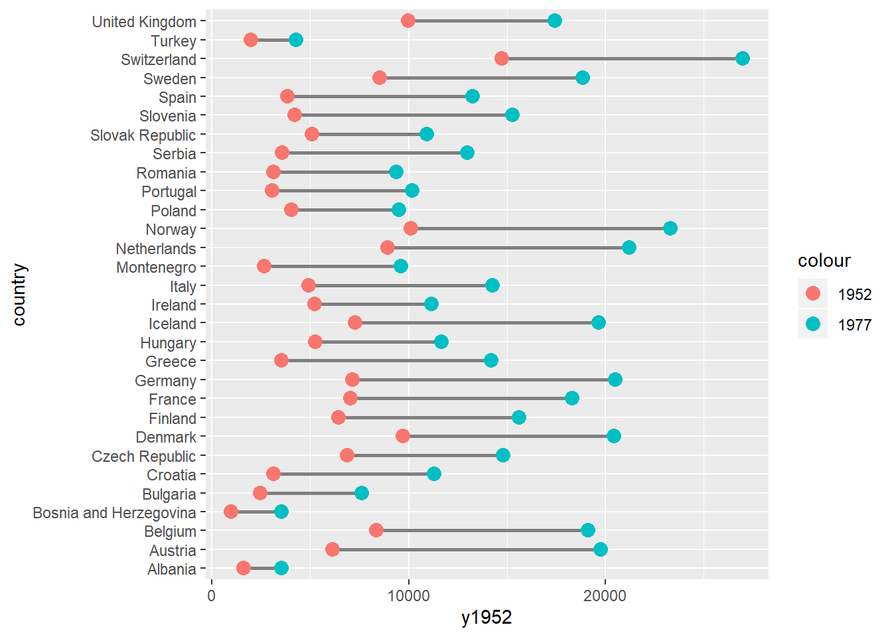

Chương 20 Trực quan hóa dữ liệu
20.1 Xây dựng phễu bán hàng theo từng nhóm
Trong quá trình phân tích bán hàng, phếu bán hàng (sale funnel) là một kỹ thuật rất hữu dụng để trực quan hóa kết quả kinh doanh theo từng nhóm. Tuy nhiên, hiện ít có biểu đồ nào thể hiện được phễu bán hàng một cách hiệu quả trên R.
Trong mục này, tác giả sẽ hướng dẫn một ví dụ thực tiễn trực quan hóa phễu bán hàng một cách hiệu quả.
Xem ví dụ điển hình về phễu bán hàng dưới đây
data <- read.table(textConnection(
c("step;segment1;segment2;segment3;total
1_visit;1806;11663;12641;26110
2_register;1143;6476;5372;12991
3_login;1806;11663;2694;16163
4_subscribe;21;3322;2694;6037
5_paid;259;422;41;722")),
header = T, sep = ";")
# Dữ liệu
data## step segment1 segment2 segment3 total
## 1 1_visit 1806 11663 12641 26110
## 2 2_register 1143 6476 5372 12991
## 3 3_login 1806 11663 2694 16163
## 4 4_subscribe 21 3322 2694 6037
## 5 5_paid 259 422 41 722Trong tập dữ liệu trên, ta sẽ mô phỏng dữ liệu phếu bán hàng của 3 phân khúc khách hàng trên một trang thương mại điện tử mà trong đó, khách hàng sẽ đi qua năm bước khác nhau:
- Ghé thăm website (visit)
- Đăng ký (register)
- Đăng nhập (login)
- Đăng ký cập nhật các thông tin sản phẩm (subscribe)
- Mua hàng và trả tiền thành công (paid)
Để tạo một biểu đồ phễu bán hàng, ta sẽ thực hiện 3 bước lớn sau.
- Tạo
themecho biểu đồ - Tạo các biểu đồ con cho phễu bán hàng
- Kết hợp các biểu đồ để tạo thành phễu bán hàng hoàn chỉnh
# Gọi library
library(tidyverse)
library(reshape2)
library(forcats)
library(ggthemes)
# Tạo theme trông cho chart
funnel_theme <- theme(axis.title = element_blank(),
axis.ticks.x = element_blank(),
axis.text.x = element_blank(),
legend.position = "none",
panel.grid = element_blank()
)
# Phân rã dữ liệu
df <- data %>% melt(id.vars = "step")
# Tạo biểu đồ chính
p1 <- df %>%
mutate(step = fct_rev(step)) %>%
filter(variable != "total") %>%
ggplot(aes(step, value)) +
geom_bar(aes(fill = variable), stat = "identity") +
facet_grid(~variable, scale = "free") +
coord_flip() +
geom_text(aes(label = value),
position = position_stack(vjust = .5)) +
scale_fill_tableau() +
theme_minimal() +
scale_y_sqrt() +
funnel_theme +
theme(plot.margin=grid::unit(c(0,0,0,0), "mm")) +
theme(
axis.text.y = element_blank(),
strip.text = element_text(size = 14,
face = "bold")) +
theme(
panel.spacing = unit(0, "mm")) +
annotate("rect", xmin = 0.5, xmax = 1.5, ymin = 0, ymax = Inf,
alpha = .2) +
annotate("rect", xmin = 2.5, xmax = 3.5, ymin = 0, ymax = Inf,
alpha = .2) +
annotate("rect", xmin = 4.5, xmax = 5.5, ymin = 0, ymax = Inf,
alpha = .2) +
theme(axis.text.y = element_blank())
p1
- Tạo thêm phần
labeltổng theo từng segment
df %>%
mutate(step = fct_rev(step)) %>%
filter(variable == "total") %>%
ggplot(aes(step, 0)) +
geom_label(aes(label = value),
col = "white",
fill = "darkred",
size = 4) +
coord_flip() +
facet_wrap(~variable) +
theme_minimal() +
theme(axis.text = element_blank()) +
funnel_theme +
theme(
strip.text.x = element_blank()
) -> p2
p2
- Tạo thêm thứ tự các bước trong phễu bán hàng để dễ theo dõi hơn
df2 <- data.frame(step = data$step,
value = 1:5)
df2 %>%
mutate(step = fct_rev(step)) %>%
ggplot(aes(step, 1)) +
geom_hline(yintercept = 1) +
geom_point(size = 10, col = "darkgreen") +
geom_text(aes(label = value),
col = "white") +
coord_flip() +
theme_minimal() +
funnel_theme +
theme(
axis.text = element_text(size = 14)
) -> p3
p3
- Cuối cùng, ta có thể tạo ghép các biểu đồ rời rạc để tạo thành phễu bán hàng hoàn chỉnh. Việc kết hợp các biểu đồ trên
ggplot2có thể hoàn thành một cách đơn giản vớiggplot2
#devtools::install_github("thomasp85/patchwork")
library(patchwork)
p3 +
labs(title = "Sale funnel for 3 segments") +
p1 + p2 +
plot_layout(nrow = 1, widths = c(1, 8, 1))
Như vậy, chúng ta đã hoàn thành phễu bán hàng rất chuyên nghiệp với ggplot2. Phễu bán hàng này đặc biệt hiệu quả khi cùng lúc phải so sánh nhiều phân khúc khách hàng khác nhau trên toàn bộ chuỗi bán hàng.
20.2 Vẽ biểu đồ warterfall cho acive/inactive users
Trong kỷ nguyên số, chỉ số active user (tạm dịch: người dùng thường xuyên hoạt động) là chỉ số đặc biệt quan trọng với bất kỳ website/ app nào. Công thức tính chỉ số người dùng thường xuyên hoạt động tại khoảng thời gian t được tính như sau:
\[active_{t} = active_{t-1} + new_{t} - churn_{t}\]
Ví dụ về waterfall chart được lấy từ ví dụ của Tableau tại đường link: [https://public.tableau.com/views/CH24_BBOD_ChurnTurnover/SubscriberChurnAnalysis]
Trong case study này, chúng ta sẽ tìm cách xây dựng một biểu đồ waterfall chart tương tự
# Load library
library(tidyverse)
library(ggplot2)
library(reshape2)
library(lubridate)
library(grid)
library(gridExtra)
# Tạo dữ liệu giả lập
set.seed(123)
data <- data.frame(date = seq(1, 372, by = 31) %>% as_date)
data <- data %>%
mutate(new = abs(rnorm(12, 100, 10)) %>% round(0)) %>%
mutate(churn = abs(rnorm(12, 50, 30)) %>% round(0)) %>%
mutate(net = new - churn) %>%
mutate(eop = cumsum(net)) %>%
select(-net)
data## date new churn eop
## 1 1970-01-02 94 62 32
## 2 1970-02-02 98 53 77
## 3 1970-03-05 116 33 160
## 4 1970-04-05 101 104 157
## 5 1970-05-06 101 65 193
## 6 1970-06-06 117 9 301
## 7 1970-07-07 105 71 335
## 8 1970-08-07 87 36 386
## 9 1970-09-07 93 18 461
## 10 1970-10-08 96 43 514
## 11 1970-11-08 112 19 607
## 12 1970-12-09 104 28 683Trong ví dụ này, dữ liệu được tạo ngẫu nhiên sao cho số lượng active user cuối kỳ (eop - end of period) bằng với số cuối kỳ trước, thêm số lượng mới và trừ đi lượng khách hàng rời bỏ (churn).
Để tạo waterfall chart, ta có thể sử dụng geom_segment trong ggplot2
# Xác định độ rộng của segment
step <- 0.4*(max(data$date) - min(data$date))/(nrow(data) - 1)
# Xác định ymax
data <- data %>%
mutate(ymax = eop + churn)
# Xác định ymin
df <- data %>%
melt(id.vars = c("date", "eop", "ymax")) %>%
mutate(ymin = ymax - value) %>%
rename(group = variable)
# Xác định xmin và xmax
df <- df %>%
mutate(xmin = case_when(
group == "new" ~ date - step,
TRUE ~ date
)) %>%
mutate(xmax = case_when(
group == "new" ~ date,
TRUE ~ date + step
))
# Create waterfall chart
p1 <- df %>%
arrange(date) %>%
ggplot() +
geom_rect(aes(xmin = xmin,
xmax = xmax,
ymin = ymin,
ymax = ymax,
fill = group))
p1
Như vậy, ta đã tạo xong biểu đồ water-fall đơn giản. Ở bước tiếp theo, chúng ta cần điều chỉnh lại các thành phần cho biểu đồ.
# Tạo dữ liệu cho biểu đồ đường
df2 <- df %>% select(date, eop) %>% distinct()
# Điều chỉnh theme
p2 <- p1 +
geom_line(aes(date, eop), col = "dodgerblue4", size = 1) +
geom_point(aes(date, eop), col = "dodgerblue4", size = 2.5) +
geom_text(aes(date, eop, label = eop), vjust = 1.2,
hjust = -0.1) +
scale_fill_manual(values = c("grey60", "coral2")) +
theme_minimal() +
theme(
axis.line = element_line(color = "gray40", size = 0.5),
legend.position = "top") +
scale_x_date(breaks = data$date,
date_labels = "%b") +
theme(panel.grid.minor.x = element_blank(),
legend.title = element_blank()) +
ggtitle("Overview of active users") +
xlab("Date") +
ylab("Number of active users")
p2Bước tiếp theo, ta cần xây dựng biểu đồ bar đơn giản để có thể đưa vào góc phần tư bên trái của biểu đồ vừa tạo.
p3 <- df %>%
mutate(value = case_when(
group == "churn" ~ -1 * value,
TRUE ~ value
)) %>%
ggplot(aes(date, value)) +
geom_bar(aes(fill = group), stat = "identity") +
scale_fill_manual(values = c("grey60", "coral2")) +
theme_minimal() +
theme(
legend.position = "none",
axis.title.x = element_blank(),
axis.title.y = element_blank(),
axis.ticks.y = element_blank(),
axis.text.y = element_blank(),
panel.grid.minor = element_blank(),
panel.grid.major = element_blank(),
axis.text.x = element_text(angle = 90)
) +
scale_x_date(breaks = data$date,
date_labels = "%b")
p3
Cuối cùng, ta có thể nhóm hai biểu đồ trên với grid & gridExtra.
20.3 Xây dựng biểu đồ lollipop chart
Trong trực quan hóa dữ liệu, lollipop chart tuy không phải là một trong những biểu đồ phổ biến nhưng lại rất hiệu quả khi muốn thể hiện sự dịch thay đổi của một chỉ số giữa hai điểm thời gian. Trong case study này, ta xây dựng biểu đồ lollipop chart với ggplot2.
Để xây dựng biểu đồ, ta sử dụng dữ liệu gapminder từ tập dữ liệu gapminder. Mục tiêu là xây dựng biểu đồ thể hiện được sự thay đổi GDP/đầu người của các nước châu Âu trong năm 1952 so với năm 1977.
data <- gapminder %>%
filter(continent == "Europe") %>%
filter(year %in% c(1952, 1977)) %>%
select(country, year, gdpPercap) %>%
spread(year, gdpPercap) %>%
rename(y1952 = `1952`,
y1977 = `1977`)
data %>% head(10)## # A tibble: 10 x 3
## country y1952 y1977
## <fct> <dbl> <dbl>
## 1 Albania 1601. 3533.
## 2 Austria 6137. 19749.
## 3 Belgium 8343. 19118.
## 4 Bosnia and Herzegovina 974. 3528.
## 5 Bulgaria 2444. 7612.
## 6 Croatia 3119. 11305.
## 7 Czech Republic 6876. 14800.
## 8 Denmark 9692. 20423.
## 9 Finland 6425. 15605.
## 10 France 7030. 18293.Biểu đồ lollipop có thể xây dựng dựa trên geom_point và geom_segment như sau.
Biểu đồ đầu tiên
data %>%
ggplot(aes(x = country)) +
# Tạo đường nối giữa hai điểm
geom_segment(aes(y = y1952, yend = y1977,
x = country, xend = country), size = 1,
col = "grey50") +
# Tạo điểm đầu
geom_point(aes(country, y1952, color = "1952"), size = 3.5) +
# Tạo điểm cuối
geom_point(aes(country, y1977,
color = "1977"), size = 3.5) +
coord_flip()
Tuy nhiên, với biểu đồ trên, ta thấy xuất hiện hai lỗi cơ bản sau:
- Thứ nhất, thứ tự các các quan sát đang để dạng mặc định. Do đó, kết quả trực quan hóa chỉ mang tính thông tin mà chưa có yêu tố
kể chuyện(story telling). Ta có thể giải quyết bằng cách sắp xếp lại factor theo thứ tự từ thấp đến cao. - Thứ hai, biểu đồ thể hiện theo chiều ngang. Do đó, các thông tin không cần thiết có thể được loại bỏ để biểu đồ gọn gàng và mạch lạc hơn.
Ta có thể chỉnh lại biểu đồ như sau.
# Tinh chỉnh theme cho biểu đồ
my_theme <- function(...) {
theme_bw() +
theme(plot.background = element_rect(fill = "white")) +
theme(panel.grid.minor = element_blank()) +
theme(panel.grid.major.y = element_blank()) +
theme(panel.grid.major.x = element_line()) +
theme(axis.ticks = element_blank()) +
theme(panel.border = element_blank()) +
theme(text = element_text(size = 13, color = "black")) +
theme(plot.subtitle = element_text(color = "gray20", size = 10, face = "italic")) +
theme(legend.title = element_text(size = 10, color = "gray20")) +
theme(legend.position = "top")
}
# Tạo biểu đồ mới
p1 <- data %>%
mutate(country = fct_reorder(country, y1977)) %>%
ggplot(aes(x = country)) +
geom_segment(aes(y = y1952, yend = y1977,
x = country, xend = country), size = 1,
col = "grey50",
alpha = 0.7) +
geom_point(aes(country, y1952, color = "1952"),
size = 3.5, alpha = 0.7) +
geom_point(aes(country, y1977, color = "1977"),
size = 3.5, alpha = 0.7) +
coord_flip() +
my_theme() +
scale_y_continuous(breaks = seq(0, 30000, by = 5000),
limits = c(800, 27000)) +
scale_color_manual(
name = "Year",
labels = c("1952", "1977"),
values = c("darkblue", "darkred")
) +
labs(x = NULL, y = NULL,
title = "An example of lollipop chart",
subtitle = "Changes of GDP per capita in Europe",
caption = "Created by RAnalytics.vn")
p1Bonus: Để nhấn mạnh hơn sự thay đổi của GDP per capita, ta có thể vẽ thêm các đường nối các điểm trong biểu đồ như sau.
20.4 Trực quan hóa các phần trùng lặp nhau
library(tidyverse)
library(UpSetR)
movies <- read.csv( system.file("extdata", "movies.csv", package = "UpSetR"), header=TRUE, sep=";" )
movies %>% head## Name ReleaseDate Action Adventure Children
## 1 Toy Story (1995) 1995 0 0 1
## 2 Jumanji (1995) 1995 0 1 1
## 3 Grumpier Old Men (1995) 1995 0 0 0
## 4 Waiting to Exhale (1995) 1995 0 0 0
## 5 Father of the Bride Part II (1995) 1995 0 0 0
## 6 Heat (1995) 1995 1 0 0
## Comedy Crime Documentary Drama Fantasy Noir Horror Musical Mystery
## 1 1 0 0 0 0 0 0 0 0
## 2 0 0 0 0 1 0 0 0 0
## 3 1 0 0 0 0 0 0 0 0
## 4 1 0 0 1 0 0 0 0 0
## 5 1 0 0 0 0 0 0 0 0
## 6 0 1 0 0 0 0 0 0 0
## Romance SciFi Thriller War Western AvgRating Watches
## 1 0 0 0 0 0 4.15 2077
## 2 0 0 0 0 0 3.20 701
## 3 1 0 0 0 0 3.02 478
## 4 0 0 0 0 0 2.73 170
## 5 0 0 0 0 0 3.01 296
## 6 0 0 1 0 0 3.88 940upset(movies, nsets = 3, nintersects = 30, mb.ratio = c(0.55, 0.45),
order.by = c("freq", "degree"), decreasing = c(TRUE,FALSE),
mainbar.y.label = "# of users by groups",
sets.x.label = "# of users by platforms",
queries = list(list(query = intersects, params = list("Drama", "Action"),
color = "darkred", active = T)),
main.bar.color = "darkgreen",
text.scale = 1.4,
shade.alpha = 0.55,
point.size = 3)